|
Roda JC - Schalke 04 (1-0) 15 januari 2002 |
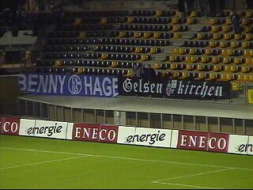
In een koud en nat PLS speelt Roda tegen
Schalke de eerste serieuze oefenwedstrijd.
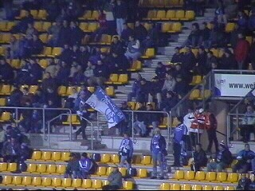
Ongeveer 2000 Rodasupporters en 300 gasten
uit Gelsenkirchen.
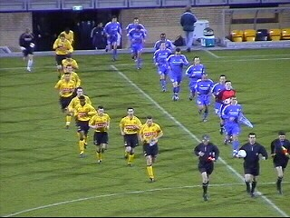
Opkomst van de spelers.
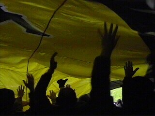
Sinds lange tijd zeilt het Roda-shirt weer eens
over Z16.
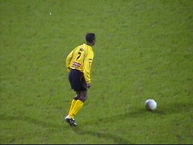
Huurling Addo maakt een puike indruk!
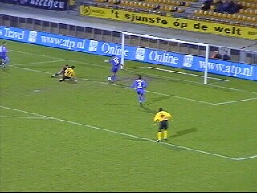
In een vrij saaie wedstrijd zijn de beste kansen
voor Roda. Hier een redding op de lijn.
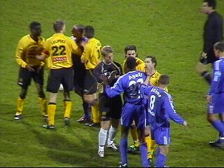
Er waren diverse opstootjes te bewonderen.
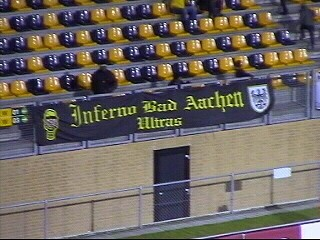
Aachen war dabei!
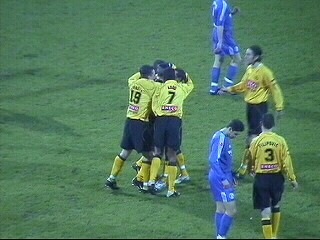
Van Dessel schiet in de 64e min. keihard in.
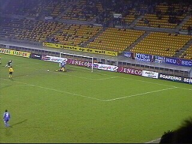
In de slotfase krijgt Schalke nog een super-kans
op de gelijkmaker.
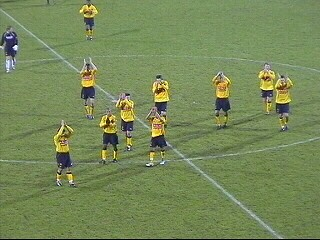
De spelers bedanken het publiek.
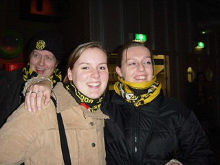
Opwarmen in de Kick-Off met de Rodameëdsjes
van april!!!
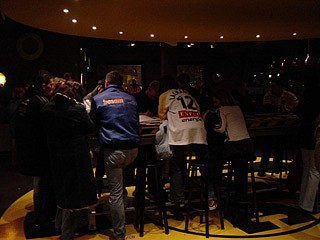
Lachambre heeft ook een fan ;-)
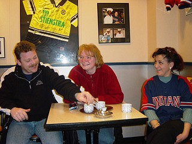
Na het afbieren buurten we nog even bij Indians
in K-town. We waren net te laat voor Vrede....
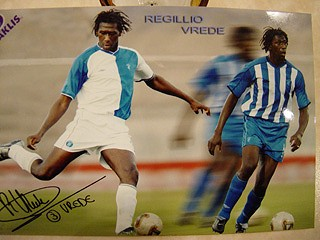
...maar gelukkig had deze een kaartje voor ons
achter gelaten!
achter gelaten!